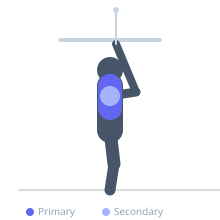
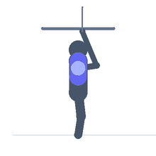

Exercise guide / Straight-Arm Cable Pulldown — Rope
Straight-Arm Cable Pulldown — Rope
The straight-arm pulldown with a rope attachment is a lat isolation exercise where the arms remain extended throughout the entire movement, eliminating bicep assistance. The rope allows the hands to separate at the bottom, increasing the range of lat contraction and recruiting the posterior deltoid alongside the lats. It is performed standing, hinging forward slightly at the hips.
Primary muscles
latissimus dorsi
Secondary muscles
deltoid posterior
teres major
Stabilizers
triceps long head
transverse abdominis
Equipment
Cable Machine (High Pulley)


Starting position
- Attach a rope to a high-pulley cable. Stand facing the cable stack approximately 2-3 feet away, hinge at the hips to 15-30 degrees forward lean. Grip both rope ends with arms extended overhead.
Setup
- Set cable to shoulder height or above. The slight forward lean increases lat stretch at the top position.
Steps
- Step 1: Stand with hips slightly hinged, arms extended up toward the cable.
- Step 2: With arms kept straight (soft elbow allowed), initiate movement by pulling the hands down and back.
- Step 3: Drive the hands downward in an arc, keeping them close to the body as they pass the hips.
- Step 4: At the bottom, separate the rope ends and squeeze the lats hard.
- Step 5: Return under control to the starting position with arms extended overhead.
Coaching cues
- Keep arms straight
- Think about tucking your elbows to your pockets
- Separate the rope at the bottom to maximize lat contraction
Breathing
- Exhale as you pull down, inhale as you return.
Range of motion
- Arms extended overhead at start, pulled to hip level with hands separated at the finish.
Tempo
- 2-1-3-0
Common mistakes
- Bending the elbows and turning it into a pulldown rather than a straight-arm movement
- Using too much weight, forcing elbow flexion
- Not hinging at the hips, reducing lat stretch at the top
Safety
- Keep a soft bend in the elbow to avoid hyperextension at the elbow joint
- Do not use heavy loads — this is an isolation movement
Training
- hypertrophy: 10–15 reps
- endurance: 15–20 reps
- hypertrophy: 3–4 sets
- endurance: 2–3 sets
- Rest: {'hypertrophy': 75, 'endurance': 45}